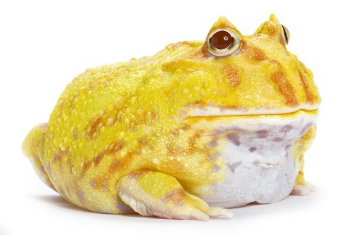
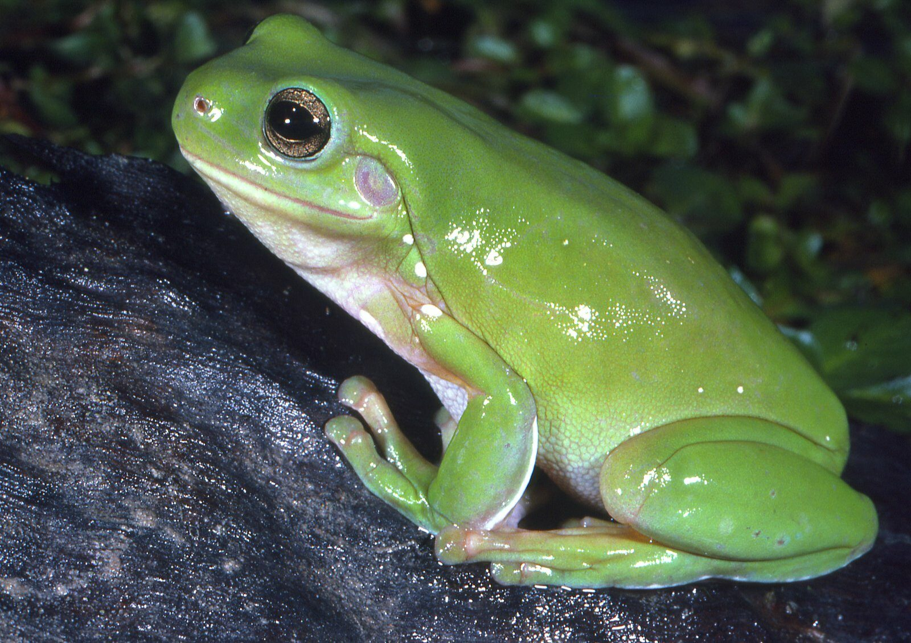
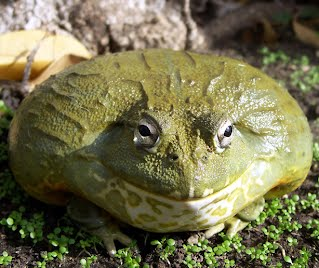

กบฮอร์นฟรอก (Argentine horned frog)

เป็นกบที่มีสีสันสวยงามหลากหลายสี มีทั้งสีเขียว เหลือง ส้ม สตอเบอร์รี่ และ ช็อคโกแลต รูปร่างกลมป้อมดูน่ารัก มีปากกว้างมาก
อายุขัยเฉลี่ย 6-15 ปี แต่ปรกติก็ 6-7 ปี เท่านั้น
เพศผู้ โตเต็มที่ 4 นิ้ว ส่วนเพศเมีย 6 นิ้ว แยกเพศได้ตอนที่กบโตราวๆ 2.5-3 นิ้ว
ฮอร์นฟรอกเป็นสัตว์เลี้ยงที่ไม่ค่อยทำกิจกรรมให้เจ้าของดูมาก ปรกติแล้วมักจะนั่งนิ่งๆ แล้วเอาตัวฝังในดินครึ่งตัวทั้งวัน
ไม่ควรจับมันเล่น เพราะบางตัวงับมือเราจนเลือดออกได้ และน้ำมันที่ผลิตจากมือของคน ก็ทำให้ผิวหนังกบระคายเคืองด้วย ดังนั้นจึงไม่ต้องกลัวว่าถ้าเราจับกบแล้ว จะได้รับสารพิษอะไรที่มือ เพราะมือเราต่างหาก ที่เป็นพิษต่อกบ
พยายามจับมันเท่าที่จำเป็นเท่านั้น
กบต้นไม้เขียวออสเตรเลีย (Australian green tree frog)

กบต้นไม้เขียวออสเตรเลีย จัดเป็นกบที่มีขนาดใหญ่ที่สุด มันสามารถเจริญเติบโตได้ถึงขนาด 10-15 เซนติเมตร โดยจะมีอายุเฉลี่ยอยู่ 16 ปี หรืออาจจะมากถึง 21 ปีได้เลยทีเดียว พวกมันจะมีลำตัวจะมีสีเขียวสดใส หรือเขียวอมเทา และน้ำตาลอมเทา ซึ่งจะขึ้นอยู่กับอุณหภูมิของสิ่งแวดล้อม และอาจพบลวดลายจุดสีขาวรอบ ๆ ตัว ลำตัวอ้วนกลม มีม่านตาสีทอง และรูม่านตาแนวขวาง มีขาที่สั้น และมีพังผืดขนาดใหญ่ที่ใช้สำหรับการปีนป่าย ลักษณะเฉพาะตัวที่มีคือ ตัวเมียจะมีใต้คางสีขาว และมีขนาดตัวใหญ่กว่า ส่วนตัวผู้จะมีใต้คางสีเทาอมเขียว และใต้ท้องทั้งคู่จะเป็นสีครีม และมีผิวหยาบ สำหรับอาหารที่มันมักจะกินก็จะเป็นแมลงตัวเล็ก ๆ แทบทุกชนิดที่สามารถเข้าปากมันได้
กบต้นไม้เขียวออสเตรเลีย เป็นกบที่มีความเชื่องไม่กลัวมนุษย์ ทำให้สามารถอยู่ร่วมกับมนุษย์ได้เป็นอย่างดี นี่จึงเป็นสาเหตุให้มันเป็นสัตว์เลี้ยงที่ได้รับความนิยมอย่างมากทั่วทั้งโลกนั่นเอง
กบบัดเจท (Budgett)
.jpg)
กบตัวนี้ได้รับความนิยมในร้านขายสัตว์เลี้ยงเนื่องจากมีลักษณะแบนและพฤติกรรมที่ชาญฉลาด ตัวเมียมีขนาดถึง 100 มิลลิเมตร (3.9 นิ้ว) ในขณะที่ตัวผู้บางครั้งก็โตเพียงครึ่งเดียว มีหัวที่ใหญ่ซึ่งคิดเป็น 1/3 ของร่างกาย โดยเฉพาะอย่างยิ่งปากที่ใหญ่มาก ปากของมีฟันแถวบนและ "เขี้ยว" สองอันที่ขากรรไกรล่าง พวกมันมีแขนขาที่สั้นและแข็งแรงมาก และขาหน้าไม่มีพังผืด
กบแอฟริกันบูลฟร็อก (African bullfrog)

เป็นกบชนิดที่ใหญ่เป็นอันดับต้น ๆ ของโลก ลำตัวมีสีน้ำตาลปนเขียว จุดสีน้ำตาล บริเวณส่วนหัวสีเขียวเคลือบน้ำตาล ขาทั้งสี่มีลายน้ำตาลดำ ขาหลังมีลายขวาง ลำตัวอ้วนข้างท้องมีลายน้ำตาลใต้ท้องเป็นสีขาว ผิวหนังส่วนใหญ่เรียบจะมีบ้างเป็นบางส่วนที่ขรุขระ มีถิ่นกำเนิดที่ทวีปแอฟริกาแถบแอฟริกากลางจนถึงแอฟริกาใต้ กบแอฟริกันบูลฟร็อกเมื่อโตเต็มวัยจะมีขนาดยาวประมาณ 8-10 นิ้ว
กบแอฟริกันบูลฟร็อก ได้กลายเป็นสัตว์เลี้ยงของผู้ที่นิยมเลี้ยงสัตว์แปลกๆ